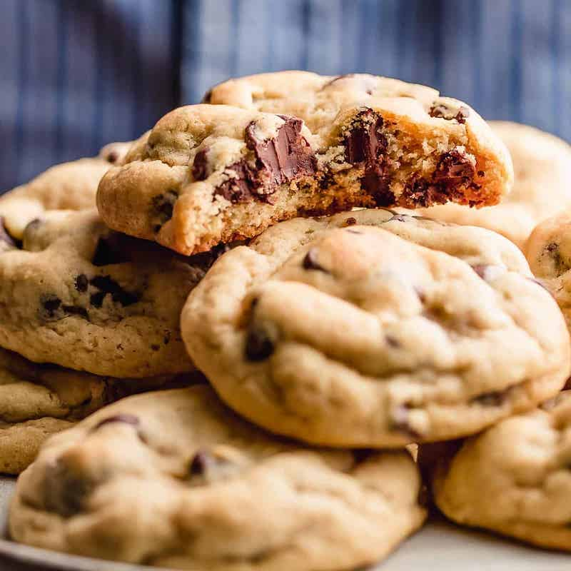

Yummy Chocolate Chip Cookies

These yummy chocolate-chip-cookies are perfect for any event. They are quick and easy to make with just a few steps you will have these cookies made in no time. Down below are the ingredients needed... lets get baking!
Ingredients
- 1 cup butter
- 1 cup brown sugar
- 3/4 cup granulated sugar
- 2 eggs
- 2 tsp vanilla extract
- 2 cups flour
- 1 tsp baking soda
- 1 tsp baking powder
- 3.5 oz box of yellow pudding mix
- 1/4 tsp salt
- 2 cups chocolate chips
Steps
- Preheat oven 350 degrees
- Combine flour, baking soda, baking powder, and salt. Stiff until it's all mixed together evenly
- Combine butter and sugars together in a mixing bowl
- Slowly adding in an egg after 30 seconds
- Stir in vanilla extract and pudding mix
- Add half of dry ingredients together
- Add in other half then pout chocolate chips in
- Roll dough into ball and place on baking sheet
- Let bake for 10-12 mins. Once done let cool for ten minutes